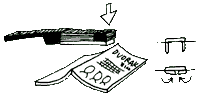
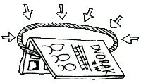
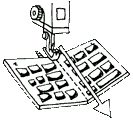

Web Comic Edition | Fullscreen Edition | PDF Edition |  Printable Edition
Printable Edition
Printable Edition
The Printable Edition of The Dvorak Zine is meant for printing out your own copies to distribute, as part of our "Street Team." The pages are imposed so that when folded in half, the pages numbers will be properly ordered. Please follow the four steps below to make your own copies of The Dvorak Zine!
STEP 1) Download
To the right is a 2.7 MB imposed PDF of The Dvorak Zine (meaning page 1 and 24 are on the same sheet, 2 and 23 on the next, 3 and 22, etc. etc.) Please download this file.
Terms Of Use: We are now licensing The Dvorak Zine using the Creative Commons Atribution-NonComercial-ShareAlike 3.0 License. That means if you print out copies of The Dvorak Zine you must give them away for free!!! You also must give us credit for creating the zine and if you change it in any way, you must use the same license.
Because of bandwidth concerns this file is being hosted externally by some of our fellow Dvorak supporters!
Please choose one of these mirrors at random:
- STedDVzine.pdf (brainfag.com)
- STedDVzine.pdf (dvzine.org)
- STedDVzine.pdf (alec-longstreth.com)
- NEW!!! An A4 Street Team edition PDF for all of our metric friends!
STEP 2) Print
Please Note: This step can be a little complicated, so be patient. It's a good idea to jot down some notes while you are doing this step, so you'll remember how to reproduce the intrstructions once you get it right!
Double Sided Printing - The Printable Edition is set up so that if your printer can print double-sided you just hit "print" and out comes your stack of 7 sheets of paper with The Dvorak Zine on it, ready to fold and bind!
Single Sided Printing - Single sided printing is a little trickier. To start, take a test sheet of paper and label it with a pencil. If your paper is in a tray, label the "face up" side and then which edges are pointing forward, backward, left and right. Then print something on that test sheet and observe which way the paper comes out of the printer! This is very important information!
With most "print" functions you can select "print odd pages only" or "print even pages only." If your printer prints on the front of the page (like an ink jet printer) print the odd pages first. Then put the paper back into the printer (flipping it properly as per your test!) and then print the even pages. If you do it correctly, you should be able to fold the 7 sheets of paper in half and get a copy of The Dvorak Zine! Or, if your printer prints on the back of the paper (like many laser printers with trays do) you should print the even pages first and then the odd pages.
Again, you might have to do a few tests to get it right! And you should make sure you are printing copies properly before you do a large print run!
Please Note: We do not condone stealing from work or school!!! Please ask your company or school before using their equipment to make copies of The Dvorak Zine, or at least make sure that you are printing within your quota of pages!!! We are not responsible for your actions!
If possible, please print on Recycled Paper!!!
STEP 3) Bind
Once you have a stack of Dvorak Zines printed out, fold them in half and make sure the pages are in the correct order. Now it's time to bind them! Here are a couple of different ways to bind your Zines:

A) Standard Stapler Trick #1 -
If you have soft carpet lay your folded zine opened and face down on the floor. (You can also use a piece of cardboard if you have hard floors!) Unhinge your stapler and staple twice along the binding. Then, lift up your zine and use a pair of pliers to fold down the staple ends inside the Zine! (The oldest zinester trick in the book!)
B) Standard Stapler Trick #2 -
The Dvorak Zine is pretty small (only 7 sheets of paper)! So after folding it down the middle, take the half of the zine with the back cover and gently curl that half into a quarter (without creasing it!) That should give you enough space to get the stapler out to the middle of the folded edge where you can put in two staples! Uncurl and Voila!

C) Standard Stapler Trick #3 -
For those of you who aren't quite so detail oriented, take your folded zine (closed) and put two staples on the face up side of the binding reallllly close to the folded edge (as close as you can get while still grabbing all of the pages!) This will behave pretty much like a normal binding staple. "Close enough for the Street Team edition!" Right?

D) Rubber Bands -
This is the quickest and dirtiest way to "bind" a zine, but it'll work in a pinch! Just stretch a rubber band around the center folded edge. It's not too strong, but it ought to keep the pages together for at least a few readings!

E) Sewing Machine!!! -
There's not much to explain here! Just take your folded zine and open it face up. Use your sewing machine to sew a "seam" down the folded edge! That'll keep the zine together really well!
F) Long Arm / Saddle Staplers -
If you are going
to be making A LOT of zines (and/or planning on making your own zine!) it's much easier to just get the right tool for the job! Stanley makes two different great staplers for jobs like this: The Long-Arm Stapler and the Saddle Stapler.
STEP 4) Distribute
After your zines are printed up and bound, it's up to YOU to distribute them! Take a few copies and pass them around work or leave them in the break room or by the copier. You can also take the zine to a local book store or magazine shop and see if they will put them on the counter. Give them to your friends and family! Try bringing a few copies to your local Computer store and ask if they'll give them away with new computers! Are you in grade/middle/high school? Print out a some copies and take them to your typing class!!! People are tying everywhere these days, so just keep a few copies in your backpack and you'll be sure to run into someone who could benefit from learning Dvorak!!!
Please Remember: You are not allowed to charge any money for these copies of The Dvorak Zine! They say "FREE" right on the front of them and are for helping us spread the word about Dvorak, not to make money!